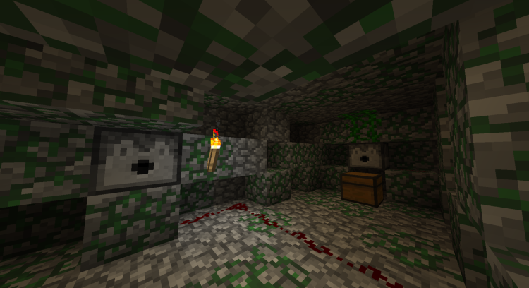
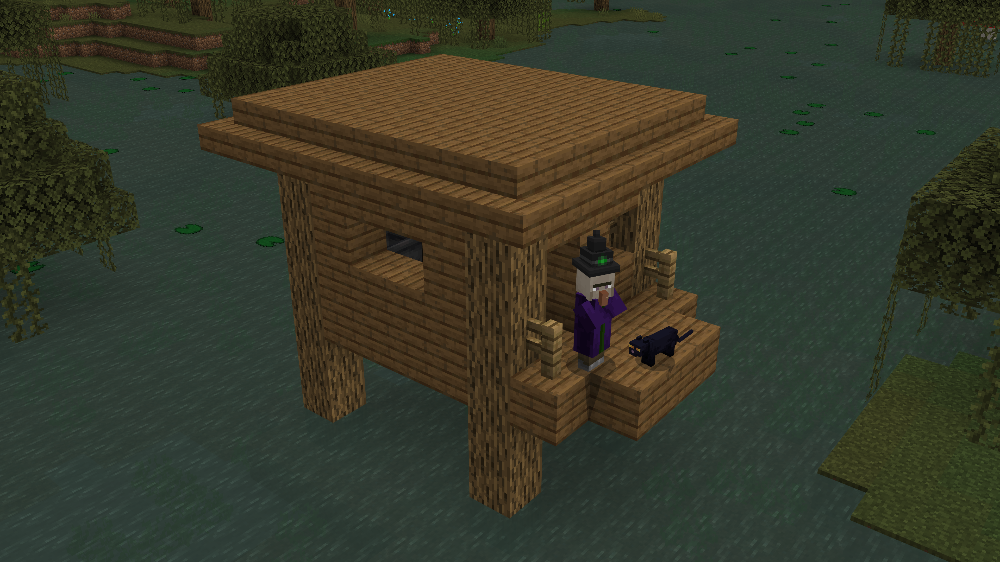
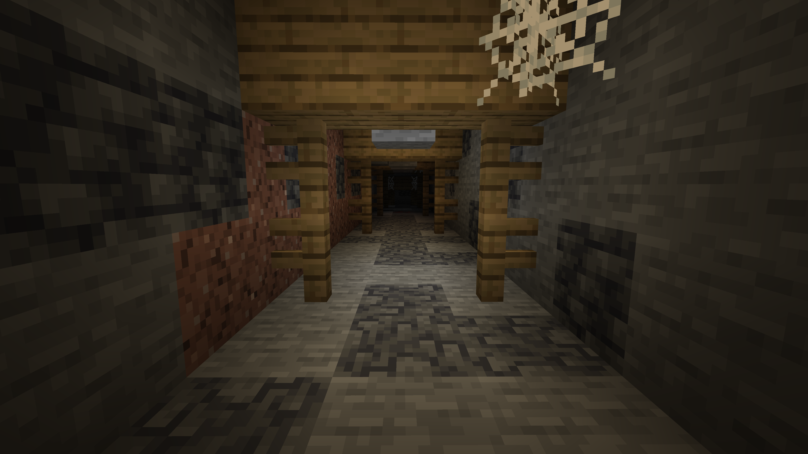
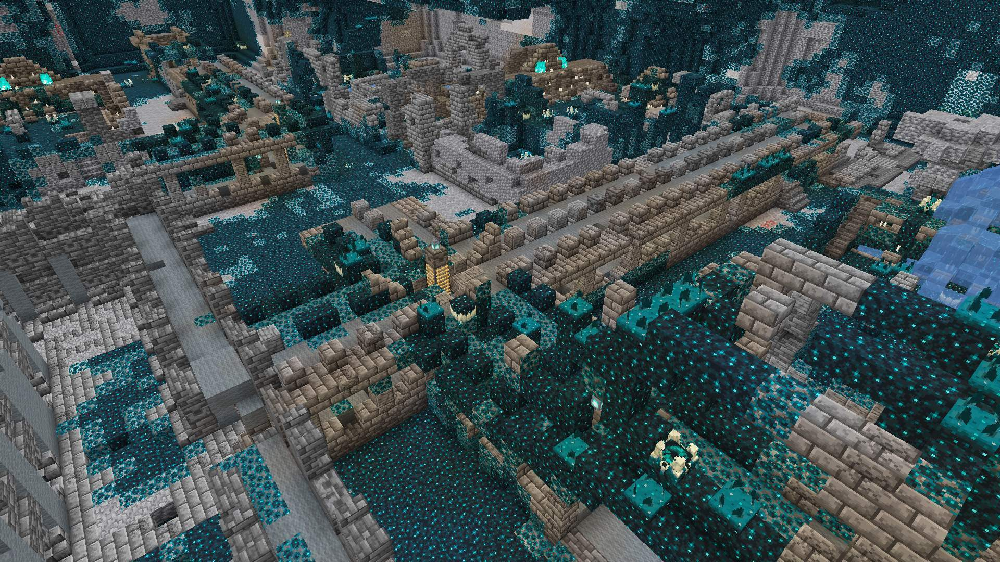
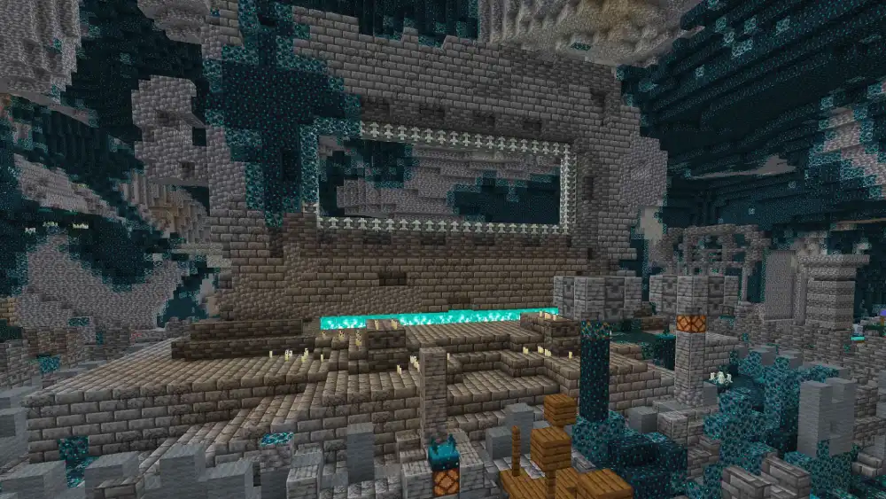
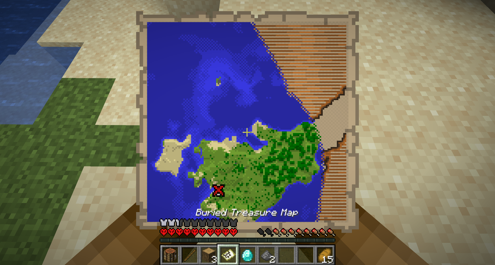
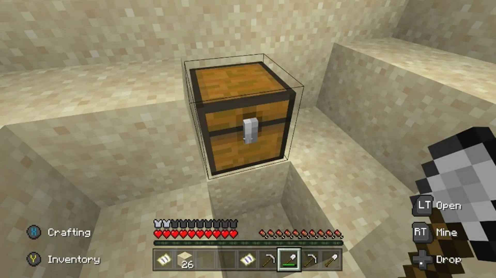

The Overworld
Villages
Villages are small towns of simple houses with some sort of farming. They have semi-intelligent life (villagers) that can trade with the player. This is believed by some to be the leftover of the prior smart world.

Igloos
Igloos are one of the pieces of evidence that point to previous intelligent life. Found in snowy biomes, Igloos are small dwellings with a bed, some essentials, and a carpet.

Underneath the carpet, there is a hidden labratory where the owner was attempting to heal a zombie villager. This demonstrates some understanding of experimentation, chemistry, and the need to hide it. From who or what, we don't know.

Jungle Temple
The jungle temple, a moss infested stone building in jungle biomes, is another excellent example of some kind of previous intelligent life in the minecraft world. Inside the temple, there are redstone traps, which show critical thinking, understanding math, and protection of territory (the loot in the temple).
Swamp Hut
Swamp huts are small wooden structures found in marsh or swamp biomes. They are usually inhabited by witches, but there are brewing stands inside of them, which shows some understanding of mixing ingredients to make potions. If anything, maybe witches who dwell in them still have knowledge of the prior world.
Mineshafts
Abandoned mineshafts litter the world everywhere underground. The player stumbles upon a mineshaft built by an unknow person or group. The tracks are in pieces and the shafts can be infested with poison spiders. Loot can also be found in chest minecarts. These tunnels show the need for materials and that suggests goals of an intelligent species.
Ancient Cities
Ancient cities are underground villages filled with skulk in deep dark biomes. The Warden lives in these cities and the environment reflects intelligence of whatever people lived there before the player finds it.
The floors are made of two block deep wool or carpets to prevent vibrations (which alert the blind monster to a player's location). The stone city is filled with candles and a large portal-esque structure. The people may have been from some other world, or trying to find a new dimension like the Nether. They may also have been worshipping the Warden in an attempt to placate it. The main structure also has a basement that shows redstone math and contraptional progress.
Buried Treasure
Buried treasure maps leading you to these buried chests can be found in shipwrecks (see 'The Ocean').
They contain loot, as you would expect, but someone had to have put them there. Who besides some long-gone entity?
Desert Pyramid
These sandstone structures resemble Egyptian pyramids with their traps around treasure inside. We have no idea who built these structures, but they managed to figure out how to creat TNT and wire traps with it.

Woodland Mansion
Woodland mansions, large dark oak and stone structures, house a variety of things including prisons, libraries, and secrets. These all indicate intelligent and complex life